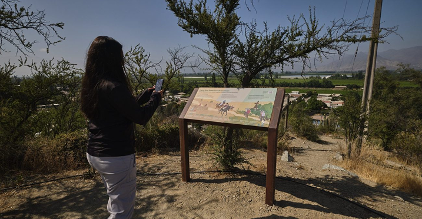
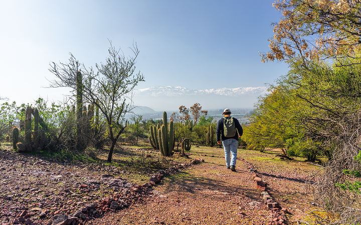
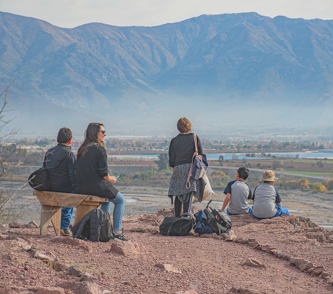

Recorre el cerro a tu ritmo con nuestra guía de senderos y señalética en terreno.
Descubre más
Programas educativos con talleres de ecología, flora y fauna nativa.
Descubre másNo te quedes fuera de nuestros
Te invitamos a descubrir los eventos pasados que hemos realizado, relacionados con la conservación, la regeneración ecológica y la educación para todas las edades. Para conocer nuestras iniciativas, visita la página de la Fundación Lepe, donde encontrarás toda la información.
Visitar Fundación Lepe